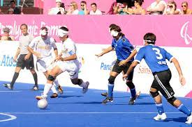

El fútbol-5 lo practican deportistas ciegos totales (clase B1) que utilizan un balón sonoro, en una combinación continua de velocidad y habilidad.Cada conjunto se compone de cuatro jugadores de campo, todos ellos ciegos y cubiertos con un antifaz, más un portero sin discapacidad. El área de juego está rodeada completamente por un muro o valla, de forma que no se producen fueras de banda. La regla del fuera de juego tampoco se aplica, de tal forma que la acción apenas se detiene. Los partidos constan de dos tiempos de 25minutos de duración, más diez minutos de descanso entre ambos. Futbol5FotoPara evitar que puedan verse beneficiados los jugadores que tengan algún mínimo resto visual, todos deben llevar un antifaz que les cubra por completo los ojos. Además, el público debe permanecer en silencio durante todo el partido, para permitir que ambos equipos puedan escuchar el balón sonoro. Sólo se permite gritar y aplaudir cuando se marca un gol.

El Fútbol 5 adaptado o Blindfutsal es una práctica deportiva que constituye una modalidad del fútbol 5 adaptado para personas amblíopes y no videntes, en el que participan también personas videntes. Es considerado deporte paralímpico desde 1996. Se utiliza una pelota sonora y cada equipo se integra con cuatro personas ciegas o con disminución visual severa —que deben jugar con cubreojos— y un portero vidente que también debe orientar a los jugadores no videntes, completándose con un "llamador" ubicado detrás del arco contrario y las indicaciones orientativas del director técnico. Se aplican las reglas de la FIFA, con las adaptaciones establecidas por la IBSA (Federación Internacional de Deportes para Ciegos). Se utilizan tres clasificaciones para garantizar la paridad entre los competidores (B1, B2 y B3). Hombres y mujeres compiten separadamente.
En 1995 se produce un hecho trascendente e histórico para este deporte, cuando la Federación Internacional de Deportes para Ciegos (IBSA) creó el Subcomité de Fútbol Sala, para trabajar sobre las adecuadas Reglas de juego de este deporte, que con un gran poder de convocatoria internacional en cuatro continentes, necesitaba enmarcar esa gran demanda en marco legal reglamentario. Para este decisivo trabajo, IBSA , designó Chairman o Presidente de dicho subcomité al hispano argentino Carlos Alberto Campos, Director, Técnico de la Federación Española de Deportes para Ciegos, y con el inestimable apoyo de la Organización Nacional de Ciegos de España (ONCE) para la ocasión, se reunió durante la celebración de distintos torneos amistosos en Europa, con representantes de Portugal, Inglaterra, Italia, Francia y Grecia, con quienes acordó unas probables Reglas de Juego, en donde cada país aportó alguna reglamentación, y renunciaba a otras, en beneficio de un acuerdo internacional. Este acuerdo llegó en septiembre de 1996 en la Ciudad de Sao Paulo (Brasil), cuando Carlos Alberto Campos se reunió, con el brasileño Ramón Souza (ABDC) y, el argentino Enrique Nardone (FADEC), representantes de Brasil y Argentina, y también miembros del Subcomite de Fútbol IBSA, con quienes consolidó y definió las Reglas del Fútbol Sala de Ciegos. Un trabajo de gran trascendencia, importantísimo para el deporte, e histórico puntapié inicial del éxito en participación
Una vez concretadas la Reglas de Juego, creando una estructura segura para la práctica de este deporte por parte de los jugadores Ciegos y Deficientes Visuales, llegó el reconocimiento oficial del fútbol para ciegos por parte de la IBSA, ingresando el Fútbol de Ciegos en los calendarios oficiales de los deportes de IBSA. Como consecuencia de este importante hecho, se realizaron los primeros campeonatos continentales, en Europa y América. Barcelona (España), fue sede del 16 al 20 de septiembre de 1997, del I Campeonato de Europa de Fútbol Sala para Ciegos y Deficientes Visuales. Con la participación de España, Portugal, Italia, Francia e Inglaterra en categoría B1, y España, Bielorrusia, Italia e Irlanda, en la categoría B2/B3. Por América, la ciudad de Asunción (Paraguay), albergó del 1 al 4 de octubre el I Campeonato de América de Fútbol Sala para Ciegos, con la participación de Brasil, Paraguay, Colombia y Argentina. Al año siguiente, en 1998, la IBSA organizó el I Campeonato Mundial de Fútbol 5 Adaptado, en Paulinhas, Brasil,7 con la participación de países de tres continentes . Posteriormente, se realizaron en 1999, los II Campeonatos Continentales, con Oporto ( Portugal ) como sede europea en junio, y Buenos Aires ( Argentina), como anfitrión americano en noviembre de dicho año. En septiembre del año 2000, Jerez de la Frontera (Cádiz, España), fue escenario del II Campeonato Mundial de Fútbol 5 Adaptado, de gran repercusión mediatiza y de participación. Con todos estos antecedentes de desarrollo y promoción del Fútbol 5 Adaptado en tres continentes, IBSA, a través del Subcomité Técnico de Fútbol,solicitó al Comité Paralímpico Internacional (IPC), el ingreso de este multitudinario deporte en los calendarios delos Juegos Patalímpicos (JJPP). En el Comité Ejecutivo del IPC, en agosto de 2000, realizado en Sídney (Australia), el fútbol de ciegos, ingresó con pleno derecho a los juegos Paralímpicos, y tuvo un exitoso debut en 2004 en los Juegos Paralímpicos de Atenas 2004, acontecimiento de máxima importancia para la notable difusión y reconocimiento social que este atractivo deporte viene sorprendiendo desde entonces. El calendario de competencias de alto nivel se completa con el Campeonato Asiático realizado desde 2007, el Campeonato Africano realizado desde 2014, la inclusión del deporte en los Juegos Parapanamericanos desde 2007, y la realización de los Juegos Mundiales para Ciegos, cada cuatro años.